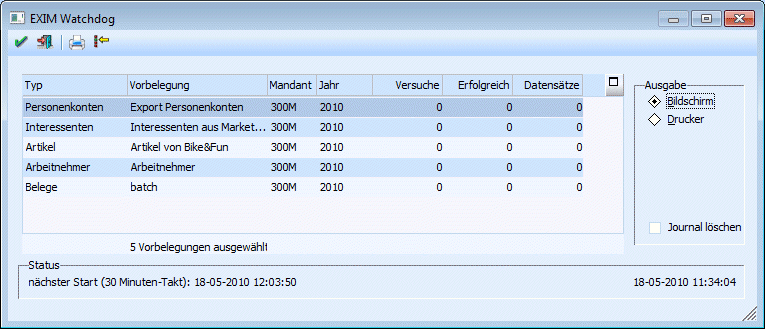

Das Programm CWLEXIM erlaubt den Import und Export von Daten ohne Benutzereingriff. In definierbaren Intervallen sieht das Programm nach, ob Datensätze zum Transfer anstehen (weil sie z.B. geändert oder neu angelegt wurden). Diese Daten werden dann entsprechend der definierten Vorlage behandelt.
Der "EXIM-Watchdog" kann mit Hilfe von Parametern gestartet werden, um das Login-Fenster zu unterdrücken. Damit ist ein vollautomatischer Betrieb möglich, indem das Programm z.B. in die Autostart-Gruppe von Windows eingebunden wird. Diese Parameter sind:
Ø /USERX
X steht für den Benutzer, mit dem das Programm ablaufen soll.
Ø /PASSWDY
Y steht für das Password, das der Benutzer verwendet.
Ø /COMPANYZ
Z steht für die Mandantennummer, mit der das Makro abgearbeitet werden soll. Diese Option muss nur dann mitgegeben werden, wenn das Programm WinLine START aufgerufen werden soll.
Ø /YEARyyyy
yyyy steht für das Jahr für das die Applikation gestartet werden soll; z.B. /YEAR2014.
Hierbei st bei abweichenden Wirtschaftsjahren zu beachten, dass dem Parameter /YEAR das Jahr in exakt der gleiche Schreibweise angefügt werden muss, so wie sie auch in der Mandantentoolbar angezeigt wird; /YEAR2013(10).
Existiert das angegebene Jahr nicht, so wird das aktuellste - d.h. das höchste vorhandene - Jahr verwendet; das LOGIN wird dabei NICHT abgebrochen.
Ø /ALL
Damit werden die Vorbelegungen für alle Mandanten und alle Wirtschaftsjahre.
Ø /1
Dieser Parameter sorgt dafür, dass die gewählten Vorbelegungen nur 1x gestartet werden (unabhängig vom festgelegten Intervall), es wird sofort ein Protokoll gedruckt und das Programm automatisch nach Durchführung der hinterlegten Aktionen wieder beendet.
Beispiele
C:\WinLine\cwlexim.exe /USERa /PASSWDb /COMPANY300M /ALL /1
oder
C:\WinLine\cwlexim.exe /USERa /PASSWDb /COMPANY300M /YEAR2014
Grundsätzlich besteht der EXIM-Watchdog aus 2 Fenstern: ein Info-Fenster und ein Einstellungsfenster. Im Einstellungsfenster, dass durch Anklicken des Buttons "Selektion" geöffnet werden kann, können die in den EXIM-Fenstern erstellten Vorbelegungen ausgewählt werden. Zur Info wird ein Bildschirm-Formular mit den Einstellungen der Vorbelegung angezeigt. Außerdem wird in diesem Fenster festgelegt, in welchen Intervallen der EXIM-Watchdog aktiv werden soll (Standard sind 30 Minuten).
Im Info-Fenster werden die ausgewählten Vorbelegungen in einer Tabelle angezeigt. Zusätzlich wird hier die Mandantennummer angezeigt, für die die Aktion durchgeführt wird, des Weitern wird angezeigt, wie viele EXIM-Versuche bereits durchgeführt wurden, wie viele davon erfolgreich waren und wie viele Datensätze davon betroffen waren.
In der Statuszeile wird angezeigt, wann der nächste "Start" erfolgt, sowie die aktuelle Uhrzeit. Der OK-Button "Sofort Starten" exekutiert sofort den Datentransfer. Die Daten der EXIM-Läufe werden gespeichert und können mittels Journal-Button ausgewertet werden. Das Journal kann auf Bildschirm oder Drucker ausgegeben werden. Mittels Checkbox wird gesteuert, ob nach dem Druck das Journal gelöscht werden soll oder nicht. Folgende Informationen werden hier gedruckt: Zeit, Vorlagentyp, Vorbelegungsbezeichnung, Erfolgreich JA/NEIN, erfolgreiche Datensätze, fehlerhafte Datensätze.
Das vom Exim erzeugte Protokoll kann automatisch an eine eingebbare E-Mail-Adresse geschickt werden.
Alle Protokolle, die beim Buchungsstapel-EXIM standardmäßig auf den Bildschirm gehen, werden beim Watchdog auf den Spooler ausgegeben.
